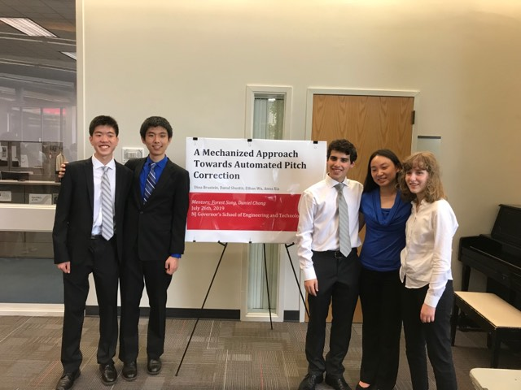

trying to help out talented high school kids
I was very generously given the opportunity to mentor a group from the Governor's School of Engineering and Technology in the summer of 2019. This definitely is their project, through and through; I was very impressed with their ability to work together as a team and their drive towards improving the project. They are definitely really talented and I think they are way further along than I was in high school.
Good job guys! You all look so professional
In the end, all I was really able to do for them was to give them design advice and 3D print stuff for them. It made me realize that I still have much to improve on and I want to do more projects of my own now.
Please check out their paper, they worked really hard on it.